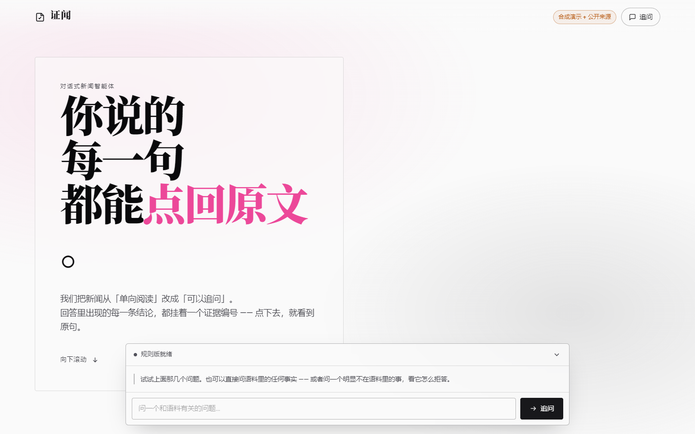

2026 年 iCAN 大学生创新创业大赛 · AI 应用创新挑战赛 · 软件赛道 · 高校组
证闻
对话式新闻智能体 · 应用方案
把新闻从「单向阅读」变成「可追问、可溯源」—— 每一条结论都能点回原文。
作品名「证闻」＝求证 + 新闻，谐音「正文」；强调「核实」而非「听说」，
直接对应本作品的两项核心机制：拒答闸门与证据回链。
提交日期：2026-09-30（截止日）｜ 材料版本：v1.0
作品形态：Agent 智能体 / 网页应用（可运行服务 + 免登录只读入口 + 静态快照兜底）
团队规模：2—5 人（以大赛官网报名信息为准）
第 1 章 项目背景 官方要求第 1 项
新闻的消费方式在过去十年被重塑了两次：第一次是「从纸面到信息流」，阅读变得即时；第二次是「从信息流到对话」，
获取信息的方式从「翻找」变成了「提问」。当生成式人工智能可以在一秒内写出一段读起来完全合理的解释时，
新闻业面对的问题已经不再是「内容够不够多」，而是 —— 读者凭什么相信这条结论？
本作品面向「文化娱乐 · 会话问答」场景，做的是一个很窄、但很硬的产品判断：
一个不能说「我不知道」的信息助手，不值得信任。
因此「证闻」不把目标定为「回答更多问题」，而是定为「让每一个回答都能被验证」：
- 可追问：用户可以用自然语言连续追问同一事件，系统维持在统一的事实基础上回答；
- 可溯源：回答中出现的每一条结论都挂载证据编号，点击即可看到原文片段、来源机构、日期与许可；
- 有边界：系统双轨检索（离线固定语料 + 提问时实时抓取公开权威源）；两条路都没有可核实依据时明确拒答并给出拒答依据，而不是生成一段听起来合理的内容；
- 显分歧：多来源表述不一致时，系统把不同口径并列展示并说明差异成因，不替用户合并成单一结论。
技术路线选择依据（2026 年评分口径）：2026 年官方评分对技术实现的要求为「技术路线是否合理，AI 能力在作品中的运用深度，
系统运行是否稳定、高效」——本作品的 AI 能力不是外挂式调用，而是深入参与「检索 → 判定 → 生成/拒答 → 分歧比对 → 留痕」全链路，
每一条链路都有可复现的实测证据（见第 6、7 章）。
第 2 章 当前存在的痛点问题 官方要求第 2 项
2.1 用户侧：不是「看不到信息」，而是「分不清真假」
| 公开调研数据 | 结果 | 标签 |
|---|
| 刷到过网络虚假信息 | 93.82% | 公开来源 |
| 曾被虚假信息误导 | 61.92% | 公开来源 |
| 因虚假信息造成财产损失 | 14.50% | 公开来源 |
| 被误导的主因：信息真伪难以分辨 | 54.08%（最高占比选项） | 公开来源 |
来源：中国青年报客户端《网络虚假信息对大学生的影响调查》（有效问卷 1,117 份，2026-08-29 发布；
URL 与访问日期见附录 A）。限定说明：该调查样本为大学生群体，不等于全年龄段网民数据；
本材料仅将其用于论证「真伪难辨」这一痛点，不外推为全体网民比例。
这组数字指向的痛点非常具体：54.08% 的受访者把「分不清真假」列为被误导的首要原因。
也就是说，用户缺的不是内容供给，而是 可验证性 —— 一条信息能不能被快速核实、能不能看到它从哪来。
2.2 行业侧：权威机构给出的解法与本作品同构
| 来源（公开） | 核心表述 | 标签 |
|---|
| 最高人民检察院《大模型技术下，AI 幻觉的风险防范》 |
提出三层防控：内部语料库 + 检索增强 → 多模型交叉验证 → 全过程留痕，并强调「人工主导、AI 辅助」 |
公开来源 |
| 中央网信办《AI 陷阱大揭秘丨AI 还会说谎？》 |
AI 生成信息须人工核对；专业文书与重要决策不得直接照搬生成内容 |
公开来源 |
| 媒体事实核查实践研究（澎湃明查透明度研究） |
透明度与溯源被公认为事实核查的关键手段 |
公开来源 |
| 《生成式人工智能服务管理暂行办法》 |
生成式 AI 服务需依法合规提供，不得生成虚假有害信息 |
公开来源 |
关键判断：最高检提出的三层防控（内部语料库 + RAG → 多模型交叉验证 → 全过程留痕）与本作品的技术设计
高度同构 —— 这不是事后附会，而是「先有合规与可信的工程直觉，再找到权威依据相互印证」。
这也是本作品「技术路线合理性」最有力的外部背书。
2.3 现有产品的缺口
- 通用对话式 AI：能流畅回答，但不告诉你依据在哪，也无法区分「语料里有」与「模型凑出来的」；
- 搜索引擎：能给出链接列表，但不承担结论责任，需要用户自己逐条比对；
- 新闻客户端：内容是单向的，无法追问，也无法就同一事件并列呈现多来源口径差异。
三者共同缺的那一环，正是本作品的设计中心：把「依据」变成产品的一等公民。
第 3 章 需求分析 官方要求第 3 项
3.1 需求推导（从痛点到功能约束）
| 用户痛点 | 需求描述 | 对产品的硬性约束 |
|---|
| 分不清真假（54.08%） |
每条结论都要能验证 |
回答必须携带证据编号；证据必须可回链到原文与来源信息 |
| AI 会编造（幻觉风险） |
没有依据时不许硬答 |
必须有拒答闸门：置信度与依据充分性双重判定，拒答时给出理由 |
| 多来源说法不一 |
不要替我下单一结论 |
必须有多源分歧检测：并列展示双方口径与差异成因 |
| 不信任「黑箱」 |
要能看到系统怎么判断的 |
必须有决策轨迹：查询理解 → 检索 → 闸门判定 → 分歧比对的逐步骤留痕 |
| 访问门槛 |
评委/用户不该先注册 |
免登录只读入口 + 静态快照兜底，链接必须稳定可访问 |
3.2 非功能需求
| 维度 | 要求 | 落地方式 |
|---|
| 可运行性 | 任何干净环境可直接启动 | 纯 Python 标准库实现，零第三方依赖，含离线原始数据快照 |
| 可复现性 | 评委可独立复核数据来源 | 抓取脚本 + 原始 API 响应落盘 + 一条命令重建语料 |
| 合规性 | 语料与组件许可可核验 | 逐源许可台账（合成原创 + 世界银行 CC BY 4.0） |
| 诚实性 | 不伪装 AI 能力 | 模型不可用时显示「规则版 + 原因」，不显示「AI 生成」徽章 |
| 无障碍 | 动效敏感用户可用 | `prefers-reduced-motion` 下自动降级为静态版面（已实测） |
第 4 章 目标用户群体及功能需求 官方要求第 4 项
| 用户群体 | 典型场景与痛点 | 对本作品的功能需求 |
|---|
一线内容核对者
（编辑、校对、事实核查人员） |
需要在短时间内确认某个数字/表述的出处，人工比对来源耗时且容易漏 |
按主题检索并返回原文片段 + 来源 + 日期 + 许可；一键打开原文链接 |
信息素养学习者
（高校学生、通识课程使用者） |
想了解一个事件的来龙去脉，但难以判断信息是否可信 |
可追问的时间线式问答；对同一事件并列展示不同来源口径；拒答时说明边界 |
| 关注公共数据的普通用户 |
看到统计数据但不知道数值来源、年份、口径，容易被二手转述误导 |
直接回答真实开放数据（如世界银行指标）并标注年份与出处；跨口径比较时给出提示 |
| 赛事评委 / 演示观众 |
只通过链接访问，不希望被要求注册或安装 |
免登录只读入口；静态快照兜底；界面明确标注演示数据性质 |
4.1 功能需求清单（优先级）
| # | 功能 | 说明 | 优先级 |
|---|
| F1 | 自然语言问答 | 中文自然语言提问，返回基于离线语料 + 实时权威源的回答 | P0 |
| F2 | 证据回链 | 每条结论挂证据编号，可点击查看原文与来源 | P0 |
| F3 | 拒答闸门 | 双轨均无依据时明确拒答，并逐条说明「查了哪些源、为什么判定无依据」 | P0 |
| F4 | 多源分歧显式 | 同题不同口径并列展示，不合并 | P0 |
| F5 | 决策轨迹 | 展示系统判断过程各步骤 | P1 |
| F6 | 模型降级与如实标注 | 无凭据时切规则版并注明原因 | P0 |
| F7 | 免登录只读入口 | 零注册、零写入 | P1 |
| F8 | 静态快照兜底 | 离线单文件页面 | P2 |
| F9 | 3D 滚轮叙事页 | 滚轮驱动的产品叙事与对话入口 | P1 |
第 5 章 开发工具与技术方案 官方要求第 5 项 · 第 6 项
5.1 技术栈与选型理由
| 层 | 选型 | 选型理由 | 许可 |
|---|
| 检索内核 | 自研 BM25（字符 bigram + 倒排索引） | 中文不引入分词依赖；确定性、可解释、可审计；零安装即可部署 | 本项目原创 |
| 服务端 | Python 3.10+ 标准库 `http.server` | 零第三方依赖 → 任何免费托管/干净环境都能直接运行，避免「缺包 → 502」演示事故 | Python PSF |
| 大模型 | 在线模型 API（可选）+ 规则版兜底 | 在线模型用于证据约束生成；未配置凭据时自动降级为规则版并如实标注 | 按所选服务商条款 |
| 前端 | 原生 HTML/CSS/JS | 无构建步骤，加载快，评委可读源码 | 本项目原创 |
| 3D 叙事 | Three.js | 程序化几何（不做实物建模），WebGL 全平台可用 | MIT |
| 滚动驱动 | GSAP + ScrollTrigger | 标准化滚动驱动动画；许可已核实为「标准免费许可，含商业用途」 | GSAP Standard "No Charge" |
| 语料 | 自建合成语料 + 世界银行开放数据 | S0 合成保证边界场景可控；世行数据为真实数值，证明系统可处理真实来源并溯源 | 原创 / CC BY 4.0 |
| 实时核证 | 白名单权威源直连（Python 标准库 urllib + 线程池并发）+ 两层判定 | 提问时当场检索公开权威源，不再只答语料内的问题；零 key、零第三方依赖，可离线部署；逐源失败与超时如实呈现；「可核实依据」与「相关线索」分层输出——查到什么就交出去，但只有可核实的才算依据 | 逐源条款（见 10.1） |
| PDF 排版 | HTML + Chromium 打印（Playwright） | 中文排版可控、产物可复现 | Playwright Apache-2.0 |
知识产权合规说明（官方要求第 4 页）：作品代码与合成语料为参赛团队原创；第三方组件仅 Three.js（MIT）与 GSAP（标准免费许可，含商业用途）；
外部语料仅世界银行开放数据（CC BY 4.0，允许复制、改编、纳入产品与商业使用，义务为署名、不暗示背书、不使用其名称与标识）。
逐条许可与访问日期见《语料来源台账》。
实时核证的引用粒度纪律：实时证据一律只保留标题 / 文号 / 发文机关 / 短摘录（不超过 280 字）+ 原文链接，
不转载全文、不缓存整篇、不做二次分发；中国政府网内容依其「禁止商业性原版原式转载」的要求，
本作品仅做短摘录与回链。每条证据均携带来源、许可、发布时间与抓取时间，界面逐条显示，判断权交给读者。
逐源条款与可用性实测结论见 /api/live/sources（与《实时源登记表》同源）。
5.2 系统架构（数据流）
| 模块 | 职责 | 关键文件 |
|---|
| 语料层 | 两份语料独立命名空间加载：S0 自建合成（演示主力）+ WB 世界银行真实指标；逐文档携带许可与原文入口 | src/corpus/s0_demo.json
src/corpus/wb_real.json |
| 实时核证层 | 提问时并发检索 12 个白名单权威源（单源超时 8 s / 整轮预算 13 s）→ 查询变体扩召回 → 两层判定（可核实依据 / 相关线索）→ 原文摘录 → 时效提示 → 逐源状态（ok / 命中数 / 线索数 / 耗时 / 失败原因） | src/live.py |
| 检索与判定层 | BM25 检索 → 依据充分性闸门 → 置信度闸门 → 多源分歧检测 → 决策轨迹；与实时侧合并判定（两条路都无依据才拒答） | src/rag.py |
| 生成层 | 证据约束生成（在线模型）或规则版拼装（降级）；引用越界校验 | src/llm.py |
| 服务层 | HTTP 接口：页面 / 语料图谱 / 证据详情 / 问答；只读模式强制 | src/app.py |
| 呈现层 | 3D 滚轮叙事页 + 对话坞 + 证据抽屉 + 分歧区块 | src/web/ |
| 数据获取层 | 世行指标抓取 + 原始响应快照 + 离线重建 | src/tools/fetch_worldbank.py |
| 兜底与快照 | 只读入口、静态快照站生成 | src/tools/build_snapshot.py |
第 6 章 作品功能逐一说明 · AI 功能的核心作用 官方要求第 7 项
本作品共 9 项功能（F1—F9，见 4.1）。下文逐一说明，并标注 AI 在其中的核心作用 ——
这不是「调用一次大模型」，而是五个层面的判定与约束，每一层都可在运行中观察、在代码中审计。
6.1 AI 五层核心作用
| 层 | 作用 | 实现与可验证点 |
|---|
| ① 语义检索 | 把自然语言问题映射到离线语料 + 实时权威源两侧的证据 | 离线侧：BM25 + 字符 bigram，索引含标题 + 正文（实测修正：初版仅索引正文导致主题信号丢失）；
实时侧：并发直连白名单源 + 查询变体扩召回（实测修正：口语长句在站内检索下相关条目被挤出候选池，命中数 0 → 6） |
| ② 依据判定 | 判断「到底有没有可核实的依据」 | 离线闸门：查询原始词命中 ≥ 2（同义扩展词不计入依据）+ 置信度 ≥ 0.34；
实时闸门：查询原始 bigram 命中 ≥ 2（与离线同口径，不因实时而放松）；
合并判定：两条路都无依据才拒答 |
| ③ 证据约束生成 | 只允许基于检索结果作答 | 规则版拼装原文；在线模型走证据约束提示词（实时证据与离线证据必须区别对待，引用实时证据须带抓取时间）；回答中的引用越界即丢弃并留痕 |
| ④ 多源一致性比对 | 识别并并列展示口径差异 | 分歧组命中即把双方口径完整并列（含差异成因说明），不做加权合并 |
| ⑤ 对话编排与留痕 | 多轮上下文 + 全过程可追溯 | 会话历史（只读模式不落状态）+ 决策轨迹逐步展示（查询理解 → 检索 → 闸门 → 分歧） |
6.2 功能说明与演示要点
| # | 功能 | 行为说明 | AI 核心作用 / 演示要点 |
|---|
| F1 | 自然语言问答 | 输入中文问题，返回基于语料的回答与置信度 | ① 语义检索；演示：同一事实的书面问法与口语问法都能命中 |
| F2 | 证据回链 | 回答下方列出证据编号；点击打开抽屉，显示原文、来源机构、日期、类型、许可、原文入口链接与署名 | ③ 证据约束的对外落点；演示：真实来源（世界银行）证据可直接点开数据集页面 |
| F3 | 拒答闸门 | 离线语料与实时权威源都没有可核实依据时（如「今天天气怎么样？」）返回拒答 + 拒答依据，不生成任何内容；拒答理由同时给出两路结论 | ② 依据判定；演示：越界问题连续拒答，且「查了哪几个源、各自命中几条」全部可见 |
| F4 | 多源分歧显式 | 命中分歧组时，界面出现「多源差异」区块，双方口径并列 | ④ 一致性比对；演示：同一事件的两种口径不被合并 |
| F5 | 决策轨迹 | 展开可见每一步（查询理解 / 同义扩展 / 语料范围检查 / 语义检索 / 区分度检查 / 依据充分性闸门 / 拒答闸门 / 多源比对） | ⑤ 留痕；演示：把「为什么拒答」变成可审计的步骤而非黑箱 |
| F6 | 降级不伪装 | 未配置模型凭据时，徽章显示「规则版」，并给出降级原因；绝不显示「AI 生成」 | 诚信落点；演示：拔掉凭据后界面文案如实变化 |
| F7 | 免登录只读入口 | 零注册、零登录；服务端拒绝一切写操作；只读模式不写会话状态 | 演示：/demo 可正常问答；PUT/DELETE 返回 403；健康检查中会话计数恒为 0 |
| F8 | 静态快照兜底 | 单文件 HTML（零外部依赖，可离线打开），固化运行状态、问答样例、证据与截图 | 应对复赛线上评选的链接风险（官方要求链接稳定可访问） |
| F9 | 3D 滚轮叙事页 | 五段滚动：全景 → 时间轴 → 多源分歧 → 对话入口 → 边界态；WebGL 不可用或用户开启「减少动效」时自动降级为静态版面 | 体验与演示效果；降级路径已实测（见 7.2） |
6.3 AI 能力的关键工程决策（可追问的细节）
| 决策 | 为什么这样做 | 实测证据 |
|---|
| 拒答阈值取 0.34 |
标定前先测两侧边界：应拒绝样本最高 0.313、应通过样本最低 0.372，两者可分离，取中间留余量。阈值偏高只损失少量召回，绝不放过编造 |
阈值可分离性实测（源码注释固化） |
| 口语问法用补召回而非松闸门 |
曾出现「5号线几个站？」因字面无交集被误拒（0.329），与应拒最高分（0.313）仅差 0.016 —— 区间重叠说明阈值无法解决，正确做法是补充同义扩展提召回，而不是放宽闸门 |
误拒 0.329 → 补召回后 0.383 通过，越界问题仍全部拒答 |
| 新增 依据充分性闸门（原始词命中 ≥2） |
接入真实语料后语料规模由 26 条增至 148 条证据，出现两类假阳性：只命中 1 个词却放行（0.379）、命中全部来自同义扩展词却放行（0.783）。高区分度词阄值经实测不可用（应通过样本大多命中 0 个），故改用「原始词命中数」作前置闸门 |
两侧实测：应通过最低 0.455 / 应拒绝最高 0.298（闸门生效后）；两个假阳性被前置闸门拦截 |
| 实时检索用查询变体扩召回，判据不放松 |
实测发现站内检索为宽松匹配：口语长句「加装电梯需要什么手续？」在中国政府网只返回 2 条且全不相关（返回的是「脱贫攻坚规划」），而核心片段「加装电梯」返回 189 条 —— 填充词把相关条目挤出了候选池 |
变体（原问句 / 去填充词 / 被填充词切开后的最长段）只用于取回候选；是否「有依据」仍由原始查询的 bigram 命中 ≥2 判定 → 命中数 0 → 6，越界问题仍全部拒答 |
| 滚动进度不依赖第三方库的缓存值 |
用户报障「3D 背景后半段不随滚动条移动」。根因实测：页面高度由接口返回后注入的内容决定，而滚动库只在 load / resize 时重算，DOM 内容注入不触发重算；字体域名挂起（load 永不触发）或接口晚于 load 时缓存值停在旧值，滚动条过 63% 后进度恒为 1 |
改为实时读元素几何 + 内容注入后显式刷新；新增可复跑回归（正常 / 字体挂起 / 接口延迟三场景）3/3 通过，后 40% 区间 3D 屏幕位移均值 47.6—49.3 px（修复前两种场景为 0 px） |
诚实声明：上表中所有数值均为本作品自建回归套件与实测脚本的输出，可复现（python rag.py）；
不包含任何「预计」「约」包装的未实测值。在线大模型路径已于 2026-09-19 接入凭据并跑通：
应放行的 5 例全部走通「证据约束生成」（单次 1351—2299 ms，引用越界丢弃 0 条）；
应拒答的 2 例未调用模型即由闸门拦截，证明「先判依据、再问模型」的设计成立。
⚠️ 样本仅 5 例，不据此外推稳定成功率；Token 实际消耗未实测。
第 7 章 系统实测与验证证据
本章数字全部来自本机与云沙箱的真实运行记录，对应《材料数字对照表》登记项。
23/23检索与拒答回归用例通过（含 5 例真实来源用例）
148证据条数（自建合成 26 + 世界银行真实 122）
7 / 32 / 4主题 / 来源文档 / 已标注分歧组
0三视口横向溢出（1440 / 768 / 375 实测）
0只读模式下写副作用（会话计数恒为 0）
0快照站断链（index + 4 图全 HTTP 200）
12实时可用权威源（另有 16 项实测不可用，已逐条留痕）
3具备真关键词检索的源（中国政府网 2 个文件库 + 央视网站内检索）
41/41实时核证判据自检（隔离桩 33 + 真实源对照 5 + 任意问题召回对照 3）
19/19分层输出端到端验证（正样本增益 / 反样本闸门 / 分层不越界）
3/3滚动→3D 联动回归（含字体挂起 / 接口延迟两种干扰场景）
7.1 检索与拒答回归（自建套件，可复跑）
| 用例类型 | 数量 | 结果 |
|---|
| 应通过（含事件口径、补贴、客流、真实指标等） | 15 | 全部通过，最低置信度 0.455（高于阈值 0.34） |
| 应拒答（天气、量子计算、写诗、房贷、股票、菜谱、爬虫、空查询等） | 8 | 全部拒答；其中 2 例为「靠同义扩展词凑命中」的假阳性，现由依据充分性闸门拦截 |
| 合计 | 23 | 23/23 通过（退出码 0） |
| 实时核证判据自检（隔离桩 33 + 真实源对照 5 + 任意问题召回对照 3） | 41 | 全部通过（退出码 0）：应命中 → 命中 6 条；应无依据 → 0 条，且不得被静默放行；只有相关线索时仍必须拒答 |
| 分层输出端到端验证（服务级，正样本 + 反样本） | 19 | 全部通过（退出码 0）：任意领域 3 问均取回内容；非新闻请求仍被拒答；证据集合与线索集合无交集 |
| 滚动 → 3D 联动回归（正常 / 字体挂起 / 接口延迟） | 3 | 3/3 通过：滚动全程进度 0 → 1，后 40% 区间 3D 屏幕位移均值 47.6 — 49.3 px（修复前后两种场景为 0 px） |
7.2 三视口与降级实测（AC-OBS-09）
| 检查项 | 实测值 | 结论 |
|---|
| 1440×900 横向溢出 | 文档 scrollWidth = 视口宽 = 1440 | 通过 |
| 768×900 横向溢出 | = 768 | 通过 |
| 375×812 横向溢出 | = 375 | 通过 |
| `prefers-reduced-motion` 降级 | canvas 隐藏、静态兜底显示、页面状态显式标注「已降级（原因）」 | 通过 |
| 降级后可用性 | 静态版面下问答闭环完整（返回含证据编号的回答） | 通过 |
 桌面 1440 · 首屏（3D 叙事页）
平板 768 · 首屏
桌面 1440 · 首屏（3D 叙事页）
平板 768 · 首屏
 手机 375 · 多源分歧面板
手机 375 · 多源分歧面板

用户开启「减少动效」→ 自动降级为静态版面（非静默，页面注明原因）
7.3 真实来源可溯源（世界银行开放数据，CC BY 4.0）
| 项 | 实测 |
|---|
| 接入指标方向 | 城市与交通 / 数字经济 / 能源与气候 / 文旅与文化（4 个方向、12 个指标） |
| 语料规模 | 25 个文档 / 122 条真实数值证据（近 5 年、中国与全球两组） |
| 可复现性 | 抓取脚本落盘原始 API 响应快照并支持 --from-raw 离线重建 |
| 溯源能力 | 每条证据携带数据集页面 URL 与署名串；问答中的证据可直接点开原文入口 |
| 口径分歧处理 | 就「城镇人口占比」的跨国口径差异建立了真实分歧组：系统并列中国与全球数值并说明「不可直接比较」的成因，不做单一结论 |
7.4 三重可运行入口（官方要求：链接稳定可访问）
| 层级 | 形态 | 实测结果 |
|---|
| L1 完整系统 | 本地/容器可运行服务（Python 标准库，零依赖） | 启动即用；/api/health 200 |
| L2 免登录只读入口 | 云沙箱部署（只读模式） | /demo 200；问答正常；越界问题拒答；PUT/DELETE 403；写副作用计数 0 |
| L3 静态快照兜底 | 单文件 HTML + 4 张截图，零外部依赖 | index 与全部图片 HTTP 200；断链 0；可离线打开 |
线上地址：见《可运行链接与源码说明》。所有入口均无需注册，且界面显式标注演示数据性质与语料许可。
7.5 实时核证层实测：分层输出与来源覆盖
| 项 | 实测 |
|---|
| 可用权威源 | 12 个。其中真关键词检索 3 个：中国政府网国务院文件库 / 部门文件库、央视网 · 站内检索；
列表池类 9 个：中国新闻网滚动新闻、中国日报中文网、中国青年网、中国经济网、人民网首页、新华网首页、央视网新闻、中国新闻网、联合国新闻（中文）、WHO |
| 实测不可用的源 | 16 项，逐条留痕：新华网站内检索（全组合 HTTP 405）、新华网 RSS（无 pubDate）、人民网 RSS（停更）/ 站内检索（反爬）、百度新闻搜索（0 个结果节点，纯 JS 壳）、头条搜索（结果混入来源不可辨的自媒体 → 宁少不假，不纳入白名单）、光明网检索（DNS 不可达）、澎湃 / 国家统计局（JS 渲染）、中国政府网其余检索频道（0 条）、新浪滚动 JSON（data 为空）、腾讯 / 环球网（空壳）、Bing（忽略 site:）、搜狗（验证码）、维基 / BBC / Reuters（网络不可达） |
| 分层输出（拒答率治理） | 按用户反馈「拒答率过高」诊断：根因是召回不足而非闸门过严。处置不放松闸门，改为两层：
· 可核实依据（查询原始词命中 ≥2）→ 才可进结论、才参与拒答判定；
· 相关线索（命中 ≥1，最多 5 条）→ 仅展示、标注「未核实」、不进结论、不进模型输入。
🔴 关键纪律：线索不参与拒答判定（否则等于把「无依据即拒答」这个核心机制拆掉），已由隔离桩专项验证。 |
| 召回增益（可复跑） | 改造前实测「7 源全 0 命中」的三类问题现均能取回内容：
「英伟达最新财报」→ 可核实 3 条 / 线索 2 条；「2026 年诺贝尔文学奖得主」→ 6 / 3；「中国新能源汽车出口数据」→ 6 / 5。 |
| 闸门未放宽（反样本） | 「帮我给这只猫起个名字吧」「请帮我写一段 Python 爬虫代码」→ 仍拒答；且拒答时照常列出已查的 12 个源与逐源结果 ——「查了没查到」本身就是要交出去的核证结果。 |
| 检索时序 | 12 源并发；单源超时 8 s、整轮预算 13 s；到点用已到达结果收口，未返回的源显式登记「预算内未返回」 |
| 时效不伪装 | 提问含「今天 / 最新 / 近日」这类时效词时，若命中条目均为旧闻，结论中显式提示最新发布日（实测：「今天天气怎么样」取回央视网天气新闻，最新发布日 2026-09-14，同时存在 2019 年旧条目 → 提示随结论一并给出）。 |
| 降级不伪装 | 单源失败只进逐源状态；全部失败标 offline 并在界面明示「本次未能完成联网核实」，绝不编造 |
诚实边界（不回避）：
① 中央媒体全站检索部分可得：央视网站内检索（search.cctv.com）实测为服务端渲染、可稳定抽取并支持翻页，
已作为真关键词检索源接入；人民网、新华网、光明网、百度、头条等其余通道实测不可得（上表 16 项已逐条留痕）。
因此本层覆盖面较此前显著扩大但仍非全网，界面与决策轨迹会如实报出每个源是「真检索」还是「最新条目池 + 关键词过滤」及池大小；
② 通用检索插槽（可扩展到全网）代码已就绪，当前未配置凭据即如实标注「未启用」，不静默假装已覆盖；
③ 本层不区分「新闻 / 非新闻」意图，只按词面相关性与来源权威性取回：若权威媒体确有该主题条目，
即便问题属生活服务类（实测「红烧肉怎么做才好吃」央视网有真实条目）也会取回并回链原文 ——
这是如实返回查到的内容，不是编造；但需明确它不等于对该问题的专业回答；
④ 本作品只做检索与回链，不对第三方内容做事实背书，判断权交给读者。
第 8 章 完整使用说明 · 用户操作流程 官方要求第 8 项
8.1 访问方式
- 浏览器打开线上入口（或静态快照站），无需注册或登录；
- 页面顶部显示语料徽章（合成演示 + 公开来源）与运行模式（只读演示）；
- 若通过本地运行：
python app.py --readonly，浏览器访问 http://127.0.0.1:8848/demo。
8.2 首屏交互（3D 叙事页）
| 操作 | 现象 |
|---|
| 向下滚动 | 镜头沿五段叙事推进：全景 → 事件时间轴 → 多源分歧 → 对话入口 → 边界态 |
| Scroll 到「分歧」段 | 并列显示同一事件的不同来源口径与差异说明 |
| 点击「追问」 | 展开对话坞（若已收起则展开） |
| 开启系统「减少动效」 | 3D 自动切换为静态版面，页面状态注明降级原因，功能不受影响 |
8.3 提问与查看证据（核心流程）
- 输入问题：在对话坞输入框输入中文问题（≤300 字），或点击示例问题标签；
- 阅读回答：回答上方显示徽章（规则版 / 大模型生成 / 已拒答）与置信度；
- 点击证据编号：打开右侧证据抽屉，查看原文片段、来源机构、日期、类型、许可、原文入口链接与许可署名；
- 查看分歧：若该问题涉及多来源口径差异，回答区下方出现「多源差异」区块；
- 展开决策轨迹：点击「决策轨迹」折叠区，查看系统每一步的判断与耗时。
8.4 三个推荐演示问题（覆盖三类结果）
| 问题 | 演示目标 |
|---|
| 「5号线开通后客流多少？」 | 正常问答 + 证据回链 + 分歧提示（合成语料，标注演示数据） |
| 「城镇化率的中国口径和全球口径能直接比吗？」 | 真实来源 + 口径分歧显式（世界银行 CC BY 4.0，证据可点开数据集页面） |
| 「今天天气怎么样？」 | 拒答闸门：系统明确拒答并给出拒答依据 |
8.5 常见问题（评委/用户）
| 问题 | 答 |
|---|
| 需要安装或注册吗？ | 不需要。线上为只读免登录入口；本地运行仅需 Python 3.10+，无第三方依赖。 |
| 为什么有些问题被拒答？ | 双轨都没有可核实依据时明确拒答（这是设计目标，不是故障）；拒答依据会同时给出「离线语料结论」与「实时核证结论（查了哪几个源、各自命中几条、为什么判定无依据）」，并把已查到的相关线索（标注未核实）一并列出 —— 拒答不等于什么都没查到。 |
| 拒答和「相关线索」有什么区别？ | 是否可核实。可核实依据（查询原始词命中 ≥2）才允许进结论、参与拒答判定；相关线索（命中 ≥1）只展示、标注未核实、不给引用编号、也不送入模型，因此不会把「沾边」当成「有依据」。这也是拒答率下降但闸门并未放宽的原因。 |
| 数据是真的吗？ | 三类内容分开标注：① 合成语料用于边界场景演示（徽章「演示数据」）；② 世界银行指标为真实公开数值并给出原文入口；③ 实时证据为提问时抓取的公开权威源内容，逐条显示来源、许可、发布时间与抓取时间，可点回原文。 |
| 没有大模型能跑吗？ | 能。未配置凭据时自动使用规则版并在界面如实标注，不冒充 AI 生成结果。 |
8.6 本地复现步骤
| 步骤 | 命令 |
|---|
| 启动完整服务 | python app.py |
| 启动只读演示 | python app.py --readonly |
| 运行回归自检 | python rag.py（期望输出 23/23 通过，退出码 0） |
| 重建开放数据语料 | python tools/fetch_worldbank.py（联网）或 --from-raw（离线复现） |
| 生成静态快照站 | python tools/build_snapshot.py |
第 9 章 应用前景与商业模式 官方要求第 9 项 · 第 10 项
9.1 应用前景
| 方向 | 价值 | 落地形态 |
|---|
| 媒体机构 | 编辑部内部的事实核对与资料速查工具，降低人工比对成本，输出可追溯的核对记录 | 内网部署（零依赖，易私有化） |
| 信息素养教育 | 把「如何验证一条信息」变成可操作的工具，而不是一句口号；适合高校通识课程与图书馆场景 | 教学演示 + 课程实验 |
| 公共数据服务 | 面向公众的开放数据问答入口，每个数值标明来源、年份与口径 | 政务/公益信息公开辅助 |
| 企业内部知识 | 同一套「证据约束 + 拒答闸门」机制可平移到企业文档场景，替换语料即可 | 私有语料部署 |
9.2 商业模式（三档，均为计划性方案 试点假设）
| 模式 | 对象 | 内容 | 状态 |
|---|
| 基础版（免费） | 个人与教学场景 | 只读演示、有限语料、单文件快照分发 | 已实现 |
| 机构版（订阅） | 媒体、高校、图书馆 | 私有语料接入、审计日志、来源台账导出、部署支持 | 计划中（未执行） |
| 定制版（项目制） | 有合规要求的机构 | 特定领域语料构建、口径分歧规则定制、内网私有化交付 | 计划中（未执行） |
诚实说明：本作品目前未与任何机构签订合作或采购意向，上述商业模式为方案设计，不含已实现的收入数据与用户量数据。
所有预期性表述均按三标签制标注为 试点假设，不代表已发生的结果。
9.3 下一步计划
- 扩大在线模型评测样本：模型路径已跑通（当前实测 5 例，见第 7 章），下一步扩为带标注评测集以取得可对外复现的效果数据；规则版继续保留为降级兜底；
- 扩展合规语料：在许可台账允许的范围内继续增加真实来源，验证跨来源分歧检测的稳定性；
- 补齐实时检索覆盖面：配置通用检索插槽（Tavily / 博查 / Serper 兼容）以覆盖中央主流媒体的全站关键词检索（当前纯 HTTP 直连不可得，已逐条留痕）；并继续跟踪各源接口变更（逐源失败原因已固化在
/api/live/sources，便于复核）；
- 评测集建设：把现有回归套件扩展为带标注的评测集，形成可对外复现的效果报告；
- 商标与命名合规：完成商标库检索，固化命名合规结论。
第 10 章 合规、数据来源与边界声明
10.1 语料来源与许可（逐源）
| 编号 | 来源 | 许可 | 义务与说明 |
|---|
| S0 | 自建合成新闻语料（本项目原创） | 归参赛团队所有 |
演示主力（约 50%），覆盖拒答与分歧边界场景；界面与证据中始终标注「演示数据」 |
| WB | 世界银行开放数据（World Development Indicators） | CC BY 4.0 |
允许复制/改编/纳入产品/商业使用；义务：署名（The World Bank: World Development Indicators）、不暗示世行背书、不使用其名称与标识 |
| — | 其他来源 | — |
本作品当前不使用未获授权媒体稿件、影视音乐素材与商业字体 |
10.1a 实时核证来源（提问时抓取，逐条回链）
| 编号 | 来源 | 许可 / 性质 | 引用粒度与义务 |
|---|
| RT-1 | 中国政府网 · 国务院文件库 / 部门文件库 | 政府网站内容 | 真关键词检索；只引标题、文号、发文机关、短摘录（≤280 字）与原文链接，不转载全文（其条款禁止商业性原版原式转载） |
| RT-2 | 央视网 · 站内检索（search.cctv.com） | 央视网版权所有 | 真关键词检索（服务端渲染、支持翻页）；只引标题 + 原文链接 + 发布日期，不转载正文；结果页为跳转壳，本作品还原为原文地址后再回链，确保「点回原文」不断链 |
| RT-3 | 中国新闻网 / 中国日报中文网 / 中国青年网 / 中国经济网 / 人民网 / 新华网（滚动或首页条目池）；联合国新闻（中文）/ WHO | 各媒体与机构版权所有 / 可引用须注明来源 | 只引标题 + 原文链接，不转载正文；界面与轨迹如实报出池大小（在多少条最新条目里找的） |
| RT-4 | 通用检索插槽（Tavily / 博查 / Serper 兼容） | 按所选服务商条款 | 代码已就绪并支持按权威域过滤；当前未配置凭据 → 未启用（如实标注，不静默假装已覆盖） |
逐源条款、抓取方式与可用性实测结论（含 16 项实测不可用的源及其失败形态）见 GET /api/live/sources，
与《实时源登记表》同源；完整实测记录见《AC-OBS-24 实时核证与 3D 滚动联动实测记录》。
10.2 数据真实性标签（三标签制）
| 标签 | 含义与使用范围 |
|---|
| 合成演示 | 演示环境生成的合成数据（本作品自建语料），不得作为事实引用 |
| 公开来源 | 可追溯的公开资料，均附 URL 与访问日期（见附录 A） |
| 试点假设 | 未执行的计划性指标，均标注「未执行，非结果」 |
10.3 边界与免责声明
- 本作品演示环境的合成语料为原创构造，不含任何真实机构、真实人物的真实言论，不得作为事实引用；
- 世界银行数据按 CC BY 4.0 使用；世界银行未参与、未背书本项目，本作品不使用其名称与标识作为背书；
- AI 输出为参考信息，不替代用户自身的判断与专业意见；系统在双轨均无依据时拒答，在模型不可用时降级并标注；
- 实时证据来自第三方公开来源：本作品只做检索与回链，不对第三方内容做事实背书；各源条款不同，本作品仅做短摘录与链接，逐源许可与抓取时间在界面与接口中逐条显示；
- 实时源覆盖有限且已如实披露：央视网站内检索（真关键词检索）已接入，但其人民网、新华网、光明网、百度、头条等通道在纯 HTTP 下实测不可得（16 项已逐条留痕），部分源为「最新条目池 + 关键词过滤」，界面与决策轨迹会报出池大小，不得被理解为「覆盖全网」；
- 分层输出不越权：「相关线索」层仅展示主题沾边的条目并显式标注未核实，不参与拒答判定、不进结论、不送入模型；线索与依据在界面上以不同边框与色系区分，不允许被当成依据；
- 本材料中所有实测数字均可在本机复跑验证（
python rag.py、python live.py --selftest、python src/tools/verify_layered_output.py、python src/tools/verify_scroll_coupling.py、三视口实测脚本、快照与部署实测记录）；未实测项一律标注为未测或计划，不以「预计/约/可达」包装。
附录 A 公开来源清单（URL + 访问日期）
| 编号 | 来源 | URL | 访问日期 / 用途 |
|---|
| S1 | 中国青年报客户端《网络虚假信息对大学生的影响调查》（有效问卷 1,117 份） | news.youth.cn/jsxw/202608/t20260829_16840692.htm | 2026-09-18 / 核心痛点数据 |
| S2 | 中央网信办《AI 陷阱大揭秘丨AI 还会说谎？》 | www.cac.gov.cn/2026-09/18/c_1791482019623488.htm | 2026-09-18 / AI 信息须人工核对 |
| S3 | 最高人民检察院《大模型技术下，AI 幻觉的风险防范》 | www.spp.gov.cn/spp/llyj/202509/t20250910_706137.shtml | 2026-09-18 / 三层防控同构论证 |
| S4 | 《生成式人工智能服务管理暂行办法》 | www.gov.cn/zhengce/zhengceku/202307/content_6891752.htm | 2026-09-18 / 合规底线 |
| S5 | 媒体事实核查透明度实践研究 | news.qq.com/rain/a/20260111A01QNW00 | 2026-09-18 / 溯源为业界解法 |
| S6 | 《信任群体智慧还是 AI 智能？人智融合事实核查对用户信息参与的影响》 | www.kmf.ac.cn/CN/10.13266/j.issn.2095-5472.2025.020 | 2026-09-18 / 事实核查实证 |
| L4a | 世界银行开放数据（CC BY 4.0 条款） | data.worldbank.org/summary-terms-of-use | 2026-09-18 / 语料许可依据 |
| — | 世界银行 WDI 指标（语料本体） | data.worldbank.org/indicator/<指标代码> | 2026-09-18 / 真实数值证据（可点回原文） |
附录 B 工程佐证材料索引
| 材料 | 内容 |
|---|
| 三视口与降级实测记录 | 原始实测数据、代码依据、截图清单（8 张） |
| 实时核证与 3D 滚动联动实测记录（AC-OBS-24） | 实时源逐项可用性实测（12 可用 / 16 不可用及失败形态）、分层输出端到端验证（正样本 3 / 反样本 2 + 分层不越界）、双轨拒答对照、查询变体标定、滚动→3D 三场景回归 |
| 实时源登记表 | 与 /api/live/sources 同源：可用源 / 不可用项 / 许可 / 抓取方式 / 引用粒度 |
| 原型骨架与检索引擎开发日志 | 6 个真实缺陷的根因与修复证据 |
| 开发过程索引 | 开发过程可追溯与决策记录 |
| 语料来源台账 | 逐源许可条款原文要点与访问日期 |
| 材料数字对照表 | 本方案全部数字的唯一登记表（含三标签） |
| 静态快照兜底站 | 单文件 HTML + 截图，离线可打开 |